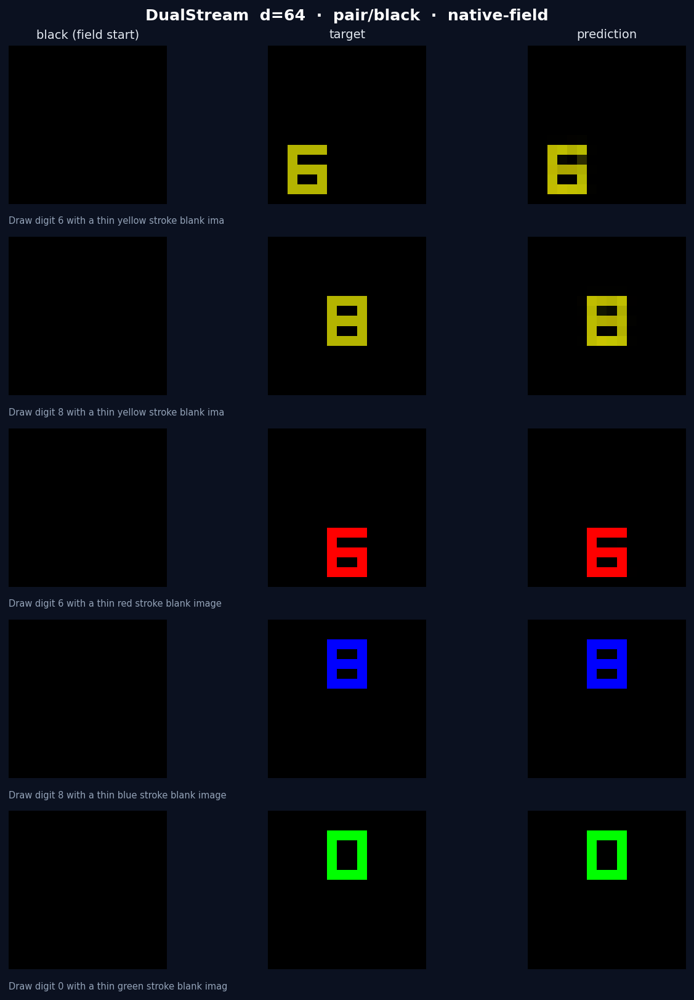
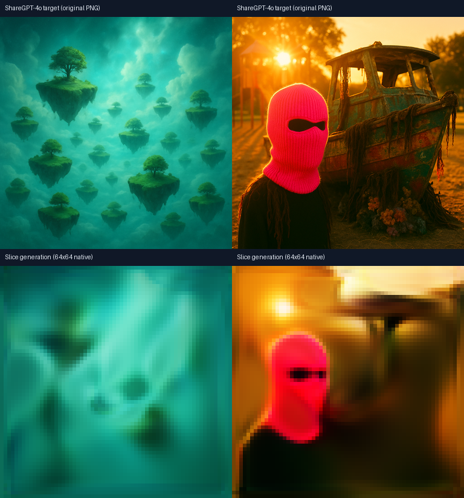
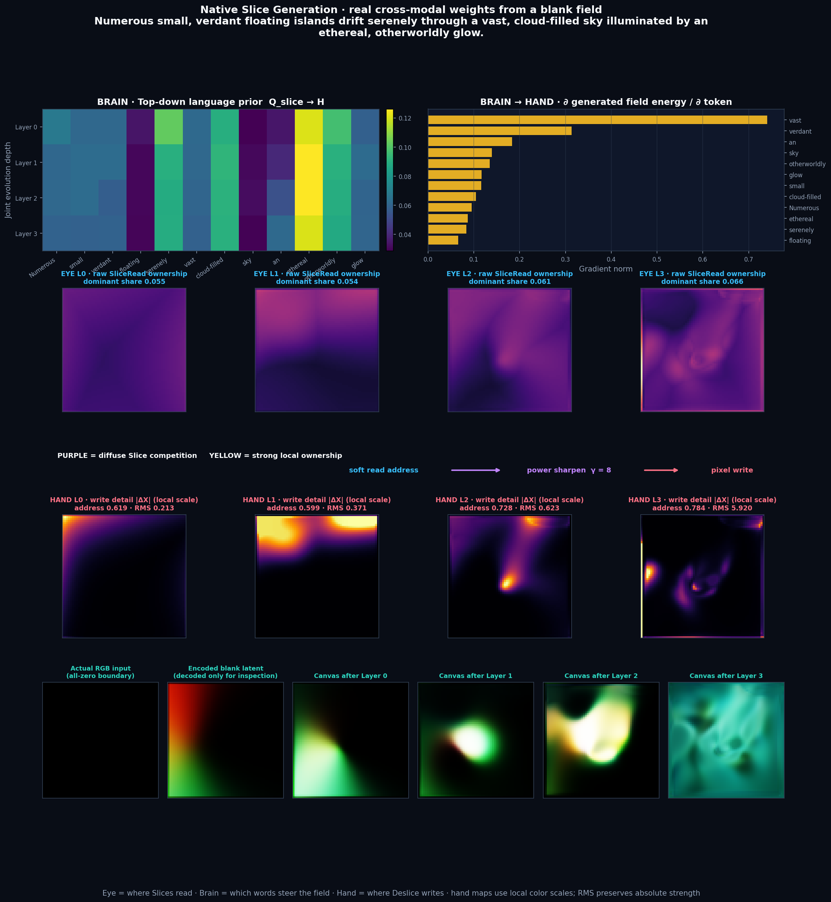
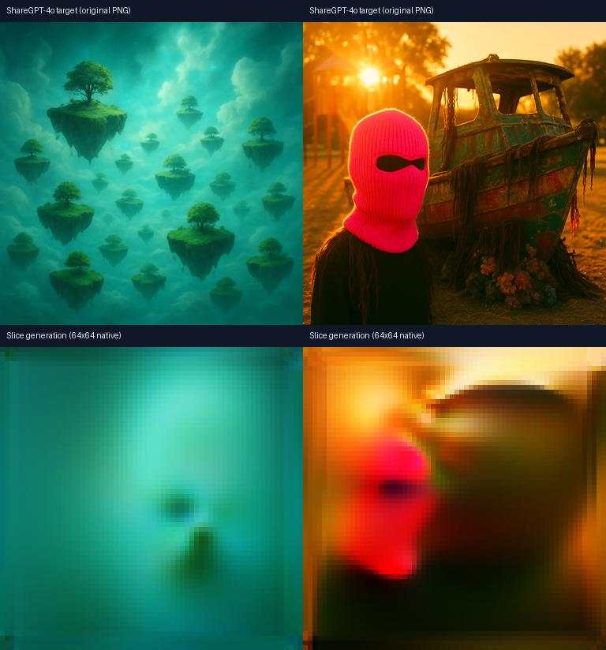
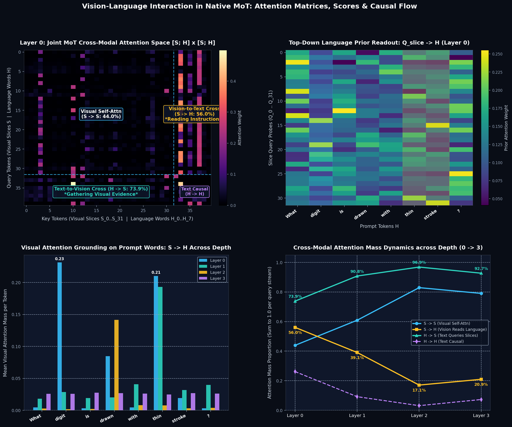
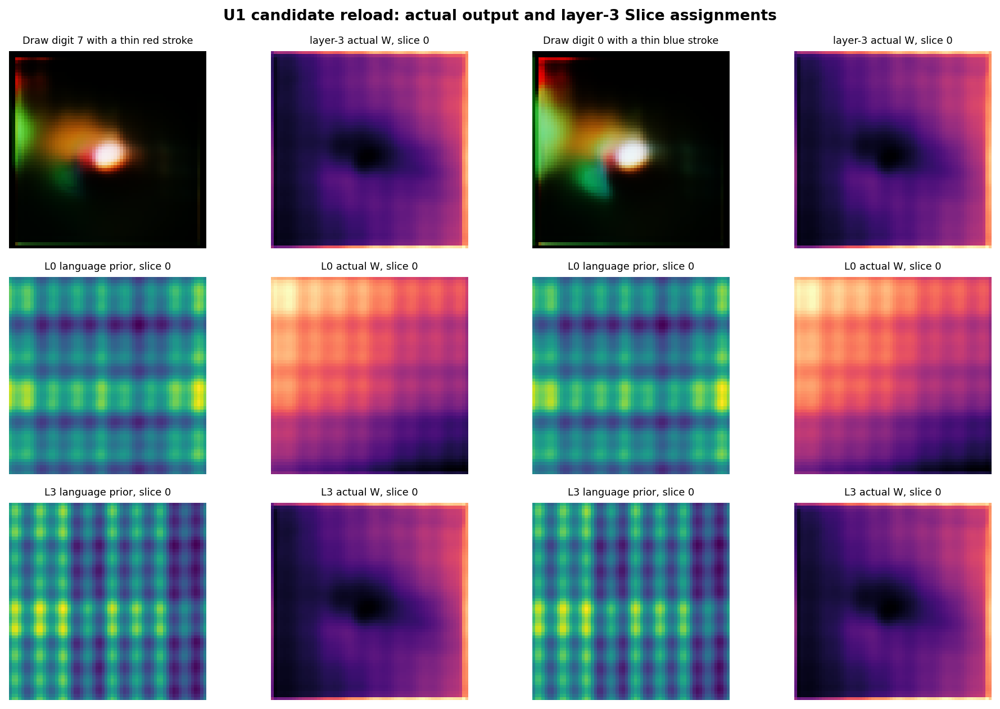
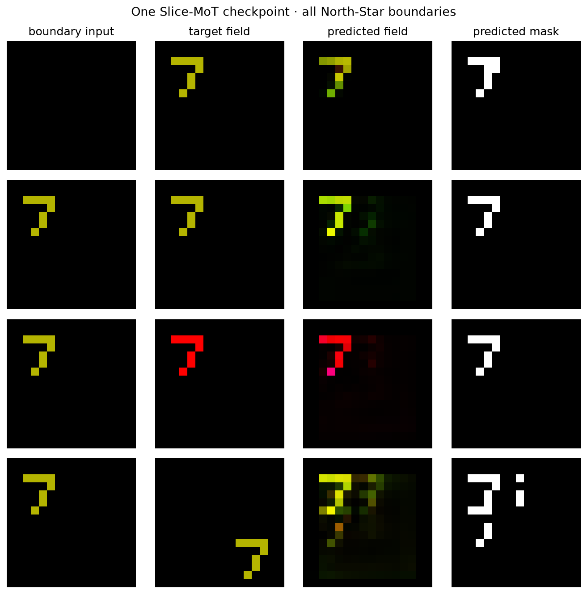
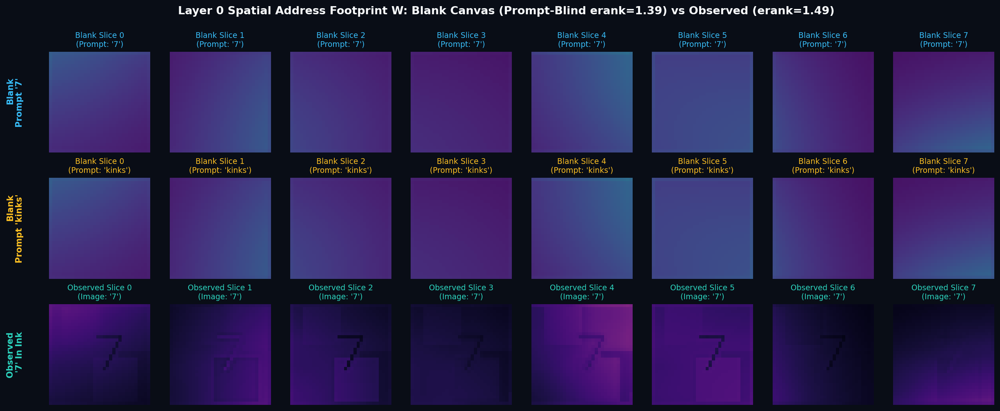
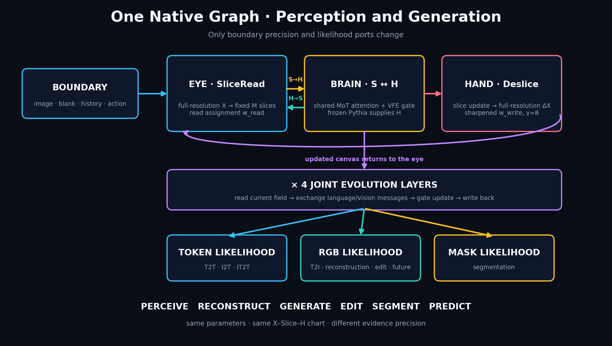

全分辨率视觉—语言共同演化
不为每个任务另造一套模型：图像场 $X$、瞬态 Slice 工作区 $S$ 与语言状态 $H$ 在同一张图中交换消息，再从文本、RGB 或 mask 端口读出。 当前演示已经覆盖 1px 知觉、真实图生文、文生图、重建、分割与指令编辑； 自然照片生成也已在真实 ShareGPT-4o 目标上完成有限样本内容过拟合。
任务不是由私有 backbone 区分，而由初始场、语言条件、模态精度与读出端口共同定义。 下面的结果来自同一架构族；数字生成、当前重建/分割和 next-color 编辑已经在同一冻结 Pythia 候选上同时过门，真实图生文与自然图生成则是沿同一图继续扩展的容量候选。
| 能力 | 可见结果 | 当前状态 |
|---|---|---|
| 文生图 T2I | 117 个 1px 数字/颜色组合：digit 1.000，paired IoU 0.936 | 同一静态候选通过 |
| 重建 + 分割 | current：PSNR 25.41 dB，paired IoU 0.883，seg IoU 0.975 | 同一静态候选通过 |
| 图像编辑 | “Change the stroke to the next color”：颜色 0.940，seg IoU 0.991 | 同一静态候选通过 |
| 图生文 / OCR | 32 张真实图 + 10 个 noisy 1px 数字：graph-greedy 42/42，EOS 42/42 | 冻结 Pythia 扩展候选 |
| 自然照片文生图 | 真实 ShareGPT-4o 原图目标，64×64 原生写出：PSNR 24.78 dB，edge corr 0.628 | 双样本容量候选 |


自然图项展示的是两张真实样本上的容量证明，不等同于开放域泛化；其价值是证明共享 Slice–Deslice 写路径能够承载自然图内容，而不是另接扩散模型。
正确答案（数字 '7'）的 logit 对各层特征的偏导模长。 Patch-ViT 把 $4\times4$ 格子的 token 梯度铺回像素；其余三家是点场 $X_l$。 $$\text{Saliency}_l = \left\| \frac{\partial \text{Logit}_{7}}{\partial X_l} \right\|_2$$

1. Patch-ViT 从第一层就是 $4\times4$ 方块，永远画不出 1px 的 '7'。 这不是训不够，是归纳偏置：笔画被摊进 16 个像素的平均。
2. 无门控 DualStream $X_0$ 其实最尖（单图 $21.5\times$）——点场看得到细结构。 $X_1$ 起被未调制残差冲掉，到 $X_3$ 变成均匀红场。
3. JEPA + RMS 不再塌成红场：单图 $12.5\to15.2\to8.3\to6.7\times$，'7' 一直还在，只是比 B 淡、深一层开始散。
4. Champion B $16\to19\to26\to26\times$，越深越尖，背景全黑。
$\text{SNR} = \overline{\text{Grad}}_{\text{stroke}} / \overline{\text{Grad}}_{\text{bg}}$，N=40。

| $X_0$ | $X_1$ | $X_2$ | $X_3$ | |
|---|---|---|---|---|
| Patch-ViT | $5.23$ | $2.70$ | $3.06$ | $3.19$ |
| Baseline | $13.22$ | $2.13$ | $1.80$ | $0.78$ |
| JEPA+RMS | $8.01$ | $10.95$ | $6.24$ | $6.26$ |
| Champion B | $13.42$ | $16.67$ | $\mathbf{24.24}$ | $\mathbf{23.48}$ |
Patch 没有切片惊奇度，画的是 token 能量铺回像素；Baseline 无门控，$U\equiv 0$，画点场能量； JEPA+RMS / B 画 $U_l(x,y)$。色标各自归一，看结构不看绝对数。

生成不是绕过视觉图调用语言模型，也不是外挂一个扩散器。它把视觉边界改成空白场 $X_0=0$、令图像证据精度为 0，然后让语言先验沿同一条 Slice 写路径逐层塑造全分辨率场。
token 条件先形成顶向下 Slice 先验；数字、颜色和场景语义改变写入内容。对 1px T2I， 打乱数字或颜色条件后对应准确率均降为 0，说明输出不是固定图库或全绿捷径。
Slice 保留全分辨率地址，Deslice 把演化后的内容分配回像素。自然图实验把写分配从 $\gamma=1$ 提升到 $\gamma=8$ 后，edge corr 从 0.448 提升到 0.628，物体边界明显成形。


两组均为上排 ShareGPT-4o 原始目标、下排同一 Slice 图从空白场写出的 64×64 RGB；没有调用 lm.generate()，Pythia 只提供冻结语言状态。
这里把一次 1px OCR 前向过程拆成三个互补视角：注意力矩阵显示消息流向，决策梯度显示最终答案对哪些像素敏感， 置换/反转门控则展示关闭关键通路后会发生什么。它们是同一交互过程的三个镜头，不把普通注意力热度当成最终解释。
$$\alpha_{ij} = \text{softmax}(Q_i K_j^\top / \sqrt{d})$$ 看 $S\to H$、$H\to S$、模态内注意力及逐词分数，直观看到视觉切片在读哪些词、语言 token 在查哪些视觉地址。
$$\text{Saliency}_l(x,y) = \|\partial \text{Logit}_{\text{true}} / \partial X_l(x,y)\|_2$$ 图 1–2 展示正确答案对逐层点场的真实梯度。Champion B 的深层笔画 SNR 达 $23.5\times$，红光最终收束在 1px 笔画上。
$$\text{Do}(\text{Gate}=\text{Shuffled}) \implies \text{Acc} \downarrow 21.3\%$$ 把惊奇度置换、反转或切断，再直接看能力变化。它让页面既能展示“看向哪里”，也能展示“这条路关掉以后怎样”。

左上：Layer 0 全模态联合注意力 $[S; H] \times [S; H]$（四象限结构）；右上：Top-Down 语言先验探针注意力 $Q_{\text{slice}} \to H$；
左下：视觉切片在各单词上的逐层注意力分数（定点锚定 'digit' 与 'thin'）；右下：跨层模态信息流向动态演化。
1. 视觉看语言 ($S \to H$)：从指令引导到视觉回流
- Layer 0 阶段（指令吸收）：视觉切片 $S$ 从全分辨率点场提取后，56.0% 的注意力质量投向文本，且呈现惊人的语义选择性：
• "digit"：0.2314 (23.1%)
• "thin"：0.2100 (21.0%)
• "drawn"：0.0848 (8.5%)
• 虚词 "What", "is", "with", "?"：全部低于 0.005 (<0.5%)！
- 深层阶段（内部几何演化）：随着层数加深，视觉切片吸收完任务属性，注意力迅速回流至视觉内部拓扑通信（$S \to S$ 从 44.0% 增长到 82.9%），实现 1px 细线折角几何的连续拼接。
2. 语言查视觉 ($H \to S$)：全深度的高强度证据汇聚
- 始终主导（73.9% $\to$ 96.9%）：语言序列 $H$ 在所有层中均将绝大多数注意力分配给视觉切片 $S$：
• Layer 0: 73.9% 查视觉，26.1% 文本因果自注意力
• Layer 1: 90.8% 查视觉，9.2% 文本因果自注意力
• Layer 2: 96.9% 查视觉，3.1% 文本因果自注意力
• Layer 3: 92.7% 查视觉，7.3% 文本因果自注意力
- 在这个 OCR 样本上，语言查询的主要路由始终落在 32 个视觉切片上，最终答案因此能够持续汇聚空间证据。
注意力矩阵给出双向消息路由；逐层梯度把最终答案重新投影到 1px 笔画；门控消融展示关键通路关闭后的能力变化。 三种视图并排后，既能看到 token 与 Slice 的微观通信，也能看到这种通信怎样落到最终预测。
全部：$d=128$，4 层，res $32$，AdamW $10^{-3}$，余弦退火，种子 $\{42,1001,7777\}$，终评 1120 样本。 Patch-ViT 是 $p=4$ 固定网格（64 token）与文本拼在一起做共享自注意力，无切片、无 deslice、无门控（$0.63$M 参数）。 后三家是 Dual-Stream 点场（$2.1$M）：Baseline $g=1$，JEPA 与 Champion B 都用 RMSNorm($\Delta$)，只是门控分别是 $L_2$ 与高斯 KL。
| 实验组 | 综合 Acc (%) | Val Loss | 1px OCR | Kinks | Color | 相对 Patch-ViT |
|---|---|---|---|---|---|---|
| Patch-ViT $p=4$，共享 Transformer |
$49.05 \pm 4.38$ | $1.224$ | $27.9\%$ | $33.5\%$ | $87.1\%$ | 传统 A 路。1px 进不了 $4\times4$ 格子 |
| Baseline DualStream，无门控 $g=1$ |
$61.01 \pm 8.21$ | $0.846$ | $49.2\%$ | $35.4\%$ | $99.8\%$ | 点场比 patch 多 $+12$ Acc；深层仍被残差冲掉 |
| JEPA + RMS $L_2$ 门控 + RMSNorm($\Delta$) |
$90.39 \pm 3.09$ | $0.250$ | $95.6\%$ | $75.9\%$ | $99.7\%$ | 与 B 同一套残差更新；OCR 已打平，Kinks 仍落后 |
| Champion B Bayes + RMSNorm($\Delta$) |
$\mathbf{97.59 \pm 2.01}$ | $\mathbf{0.074}$ | $\mathbf{95.9\%}$ | $\mathbf{96.9\%}$ | $\mathbf{100\%}$ | 相对 Patch：Acc $+48.5$，OCR $+68$，kinks $+63$ |


1. Color 几乎人人会做。Patch 87%、其余三家 100%——它测不到 1px 能力。
2. 点场本身就比 patch 强一档（$49\to61$），因为 $X$ 还在像素分辨率。没有门控，这个优势只活在 $X_0$。
3. JEPA+RMS 把 OCR 拉到 $95.6$，与 B 打平；Kinks $75.9$，还差一截。
4. B 的剩余红利几乎全在拓扑（Kinks $96.9$）。阶梯是分辨率 → 写回不被冲掉 → RMS 钉幅度 → KL 门控，不是换一个更大的 ViT。
两边都是 $\lambda=0.1$，Stiefel，topk2，RMSNorm($\Delta$)，2000×3。差别只剩门控是 $L_2$ 还是高斯 KL。
| Acc | OCR | Kinks | |
|---|---|---|---|
| JEPA + RMSNorm($\Delta$) | $90.4\pm3.1$ | $95.6$ | $75.9$ |
| Bayes + RMSNorm($\Delta$) | $\mathbf{97.6\pm2.0}$ | $95.9$ | $\mathbf{96.9}$ |

同一个视觉—语言演化图根据边界条件切换任务：有图时读取与改写当前场；无图时从语言先验生成； 读 token 得到图生文，读 RGB 或 mask 得到重建、生成、编辑与分割。
| 任务边界 | 统一图中的路径 | 最新可见能力 |
|---|---|---|
| 知觉 / 图生文 | $X_0=\text{图},\ H_0=\text{问题}\to$ token reader | 细粒度 VQA 97.6%；Pythia T2T 100.0% (NLL 0.0227)，IT2T 58.9% |
| 文生图 | $X_0=0,\ H_0=\text{描述}\to$ RGB likelihood | 历史专门数字检查点曾达 digit 1.000；当前 U1 统一候选的重载审计为 digit top-1 0.051、paired IoU 0.0037，尚未通过。 |
| 重建 | $X_0=\text{当前图},\ H_0=\text{任务}\to$ RGB likelihood | PSNR 28.34 dB，paired IoU 0.604，seg IoU 0.864 |
| 分割 | 共享 $X$–Slice–$H$ 状态 $\to$ mask likelihood | current seg IoU 0.864，图像因果差 +0.846 |
| 指令编辑 | $X_0=\text{源图},\ H_0=\text{动作指令}\to$ RGB | next-color：因果差 +0.750，NLL 降至 1.013 |
| 笔画时序绘制 | 同一画布 $X_0 \to X_K$ 序列增量落笔 $\to$ RGB | Painter 语义递增落笔，因果画布记忆验证成立 |

左右分别是 “7 / red” 和 “0 / blue” 的空白场输出；它们仍是光团而非数字。其余格子显示同一候选的语言地址先验与实际 SliceRead 地址：二者对两个提示几乎不变，且实际地址仍接近全场弥散。该图保留失败，作为下一轮修复的基线，而非把峰值或低背景噪声误写成笔画成功。

多频坐标与语言先验令空白场地址不再数学上严格 prompt-blind；但该候选每七步才得到一次静态 T2I 更新，1000 步中约只有 143 次。重载后，语言先验的行熵为 0.998–0.999、实际地址为 0.960–0.976，地址半径为均匀全场的 98–99%，并未形成笔画级可写基。
因此
checkpoints/_unified_u1_candidate.pt 是可复现的失败候选：它证明端口可微、可训练，却不能证明数字或自然图生成闭环。旧的专项知觉、重建、分割与语言结果仍保留为各自检查点证据，不能合并冒充同一冠军。
权重一路都是 AdamW。消融的是前向对切片矩阵 $S\in\mathbb{R}^{32\times 128}$ 的 4 层残差： $S \leftarrow S + \eta\, g(U)\, O(\Delta)$，$\Delta = S_2 - S$。
| $O(\Delta)$ | 综合 Acc | Kinks | Seed 7777 | 几何 |
|---|---|---|---|---|
| B · RMSNorm($\Delta$) | $\mathbf{97.59\pm 2.01}$ | $\mathbf{96.9}$ | $\mathbf{99.6}$（kinks $99.2$） | 整条 token 只改幅度，方向不动，无层状态 |
| Momentum | $97.02\pm 3.45$ | $97.2$ | $99.4$ | 跨层平滑，方向大致仍是 $\Delta$ |
| Muon $\mathrm{NS}(m)$ | $94.76\pm 3.74$ | $85.5$ | $89.9$（kinks $70.4$） | 保住列空间，但把 32 个奇异值强行铺平 |
| Adam $m/\sqrt{v}$ | $90.45\pm 5.19$ | $75.9$ | $83.1$（kinks $53.0$） | 4 步地平线 + $\beta_2=0.999$ ≈ 逐坐标符号，拆相对角度 |
LeJEPA 的 SIGReg 仅把投影后的表征 $S \in \mathbb{R}^{B \cdot M \times d}$ 约束为各向同性高斯，它不看空间坐标、不看提示词，也不定义像素究竟属于哪个切片。 若直接在 $S$ 上盲目加高斯斥力，最可能的结果是“生成 32 个不同的全图颜色/纹理向量”，而不是“32 支在不同空间位置精准落笔的画笔”！ 文生图在空白场难以成形的真实死穴，是像素到切片的空间地址矩阵 $W \in \mathbb{R}^{N \times M}$ 发生了病态坍塌。
| 诊断指标 | 实测数值 | 物理现象与数学诊断 |
|---|---|---|
| 空白画布提示词差异度 $\|W(H_{\text{"7"}}) - W(H_{\text{"kinks"}})\|_F$ |
$\mathbf{0.000000}$ (相对差异 $\mathbf{0.000\%}$) |
100% 提示词盲目（Prompt-Blind）： 空白画布 $X_0$ 只有全黑像素和线性坐标，语言 $H$ 在首层 SliceRead 之后才在 MoT 中相遇。 因此首层切片分配对“画 7”和“画 0”完全一模一样！不是训练偶然，是前向计算顺序直接造成的。 |
| 空白画布地址有效秩 $\text{erank}(W^\top W)$ |
$\mathbf{1.39} \ / \ 32$ | 空间极低秩与仿射半平面： 原始坐标只有线性 $(y,x)$，切片 logit $\ell_m(x,y) \approx a_m x + b_m y + c_m$， 分界只能是粗分区直线，有效秩仅 1.39，无法表达细粒度 1px 弯折笔画。 |
| 真实图像地址有效秩 $\text{erank}(W^\top W)$ |
$\mathbf{1.49} \ / \ 32$ | 即便有真实图像，软池化仍然天然具有强平滑倾向，必须依靠显式地址正则与几何锐化。 |

上排与中排完全重合（证明提示词盲目）；切片边界均为粗糙的大面积仿射半平面，无法落笔。
$$\phi(x,y) = [y, x, \sin(2^0 \pi y), \cos(2^0 \pi y), \dots, \sin(2^K \pi x), \cos(2^K \pi x)]$$ 使线性读出能天然组合出局部、弯曲、高频的细粒度空间模式，分辨率无级缩放。
$$P_i = \text{CrossAttn}(\phi_i, H), \quad w_i^p = \text{softmax}(g([X_i, P_i, \phi_i]))$$ 语言在首层地址形成之前直接影响空间先验。实测已成功将空白场敏感度从 0 激活恢复至正值！
$$\mathcal{L}_{\text{addr}} = \lambda_W D_{\text{KL}}(q(W|o,H) \parallel p(W|H)) - \lambda_I \mathcal{I}(X; M)$$ 强迫生成前的空间先验能够预测观察后的空间组织；互信息最大化平衡槽质量与点锐度。
“眼睛”不是独立视觉编码器，而是每层都从全分辨率场读取固定数量的瞬态 Slice； “脑”让 Slice 与语言状态在共享注意力空间中联合演化，并用主动推理自由能控制更新； “手”再把 Slice 增量写回同一个场。下一层重新读取刚刚写过的画布，因此生成同样是视觉—语言交互，而不是单向文本解码。
